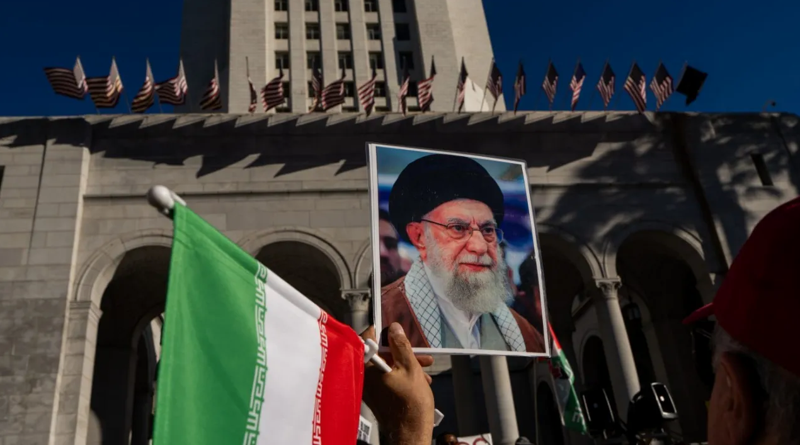
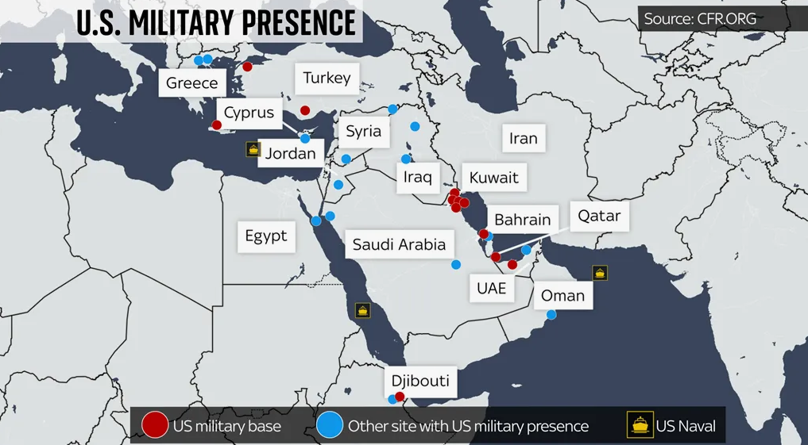
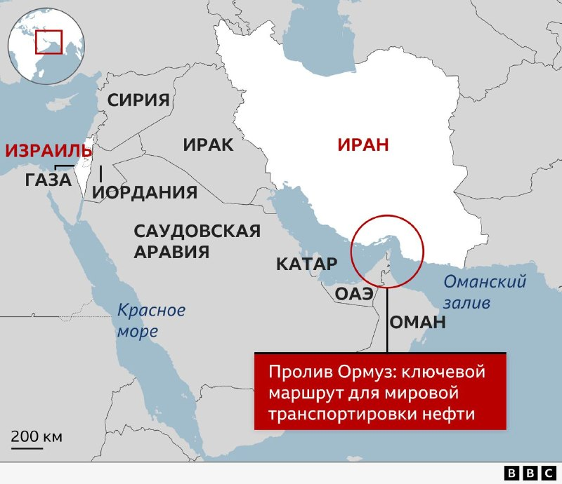

Убить лидера, но не сломать страну: почему план США по Ирану уже провалился
← К архивуДата:

Гибель Хаменеи должна была стать началом конца Ирана. Вместо этого страна наносит удары по базам США, а новый лидер обещает отомстить. Американцы получили ровно обратный эффект — и теперь вынуждены договариваться с теми, кого хотели уничтожить.
Всю неделю нам пытались объяснить, что смерть 86-летнего аятоллы — это катастрофа для Тегерана. Что режим рухнет, что народ выйдет на улицы, что КСИР развалится. Но реальность оказалась сложнее картинок из либеральных телеграм-каналов.
Хаменеи правил страной 37 лет. И если кто-то думает, что за почти четыре десятилетия он не подготовил преемников и не выстроил систему, где смерть одного человека ничего не решает — этот кто-то либо наивен, либо врет. Полномочия были подхвачены мгновенно. Пезешкиан нашелся и выступил с обращением. Силовики не разбежались, а начали отвечать.

Особенно забавно читать про «папочки» и «теплые ванны». Мол, Владимир Путин не знает реальную обстановку, а Хаменеи просто не успели спрятаться. Люди всерьез считают, что лидеры государств живут в мире розовых пони и узнают о войне из новостей. Человек, который пережил ирано-иракскую войну, десятки покушений и 37 лет дворцовых интриг, вдруг оказался наивным стариком, поверившим, что его не тронут.
США и Израиль сделали ставку на обезглавливание. Но Иран — не Хезболла и не ХАМАС. Это государство с ядерной программой и армией в 200 тысяч только элитных силовиков. И эти силовики сейчас получили личного врага. Мученическая смерть лидера в войне с внешним агрессором в такой стране работает на сплочение, а не на раскол.
Что мы видим по факту:
— Иран лупит по базам США и их союзников
— Ормузский пролив превратился в зону неопределенности, танкеры атакуют, нефть дорожает
— Новый лидер публично обещает месть
— Массовых протестов нет, потому что во время воздушных атак нормальные люди сидят по домам, а не митингуют

Трамп уже заявил, что договариваться с Ираном теперь легче, чем днем ранее. Это не про победу. Это про то, что ставка на убийство не сработала. Вашингтон хотел получить напуганное руководство, готовое на любые уступки. А получил разъяренное руководство, которое уже ничего не боится.
С Венесуэлой тот же сценарий отработали: бомбили, давили, требовали смены власти, а в итоге сели за стол с теми, кто выжил. Разница лишь в том, что у Ирана есть ракеты, которые долетают до авианосцев, и есть союзники, готовые их запускать.
Смерть Хаменеи ничего не решила. Иран воюет. Нефть дорожает. США втягиваются в затяжной конфликт, где нельзя победить одними бомбардировками.
Это стоит понимать, когда в следующий раз будут рассказывать про «смену режима» и «точечные удары по инфраструктуре». Война — это не компьютерная игра. А Ближний Восток — не место, где всё идет по плану.